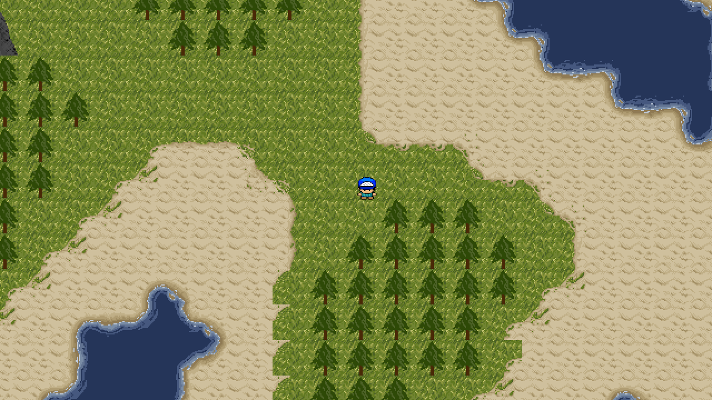

Decay is a 2D action platformer in development for Windows, Mac, Linux & Android. It takes inspiration from a number of platformer games from the 90s. You take the place of a man...
Features
- Story mode with over 10 hand-crafted levels
- Sandbox mode, Explore a procedurally generated world, full of unique dungeons
- Enjoy retro gameplay and authentic pixel art
- Battle bosses
- Leaderboards
- Windows, Mac, Linux & Android support
Screenshots



Follow Us
You can follow development on my twitter account @JasenC, Google Plus +Jasen Christie or my blog jasen.me